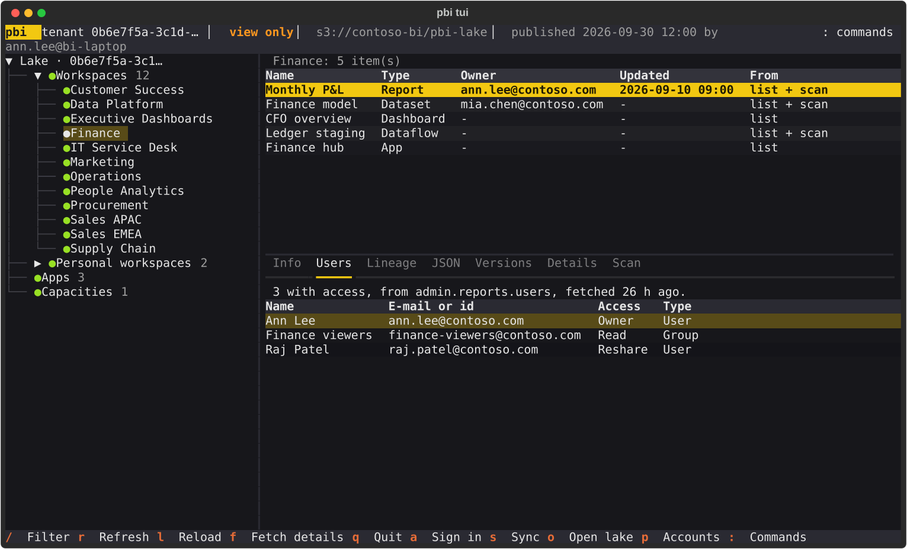

Sharing a lake¤
The data lake is plain files, so what one person fetched can be opened by others: from a shared folder, or from S3. The people who open it need no Power BI account and no token. They only need to read the files.

Open a lake that someone shared¤
pbi tui --lake s3://my-bucket/pbi-lake # the terminal UI
pbi lake ls --lake s3://my-bucket/pbi-lake # what it holds
pbi sync status --lake s3://my-bucket/pbi-lake # how its last syncs went
--lake takes a folder or a URL. It may be the lake itself (the folder with the tenant=...
folders in it) or a cache folder, in which case its lake folder is the lake. Without
--lake the environment variable PBI_LAKE is used, then the session.lake of the
plan file given with pbi tui --config, and without any of them the
lake of your cache folder. A bare pbi in a terminal opens the TUI when PBI_LAKE is set, too.
In the TUI the key o opens another lake without leaving it: the dialog offers your work
lake and the lakes you opened lately, or you type a place. A lake that cannot be read
(a bucket you have no credentials for, a folder that is not there) is said in a message and
the lake that was open stays open.
Only the work lake is ever written¤
Your work lake is the lake of the cache folder (pbi config set-cache-folder). Every
pbi sync, every command that fetches, and every fetch of the TUI writes there, and only
there. A lake that you open any other way, with --lake, with PBI_LAKE or with the dialog
of the TUI, is read-only: the store refuses every write, whatever the command or the
screen asks, so that nothing you try can change what you opened. There is no flag that
turns this off. To sync into a lake, make it your cache folder, on purpose.
In the TUI a read-only lake is marked view only in the header. No account is looked up
or asked about. Signing in, r (fetch again) and Run on the Sync screen say that the
lake is only looked at and do nothing; browsing, the filters, Ctrl+P and the Lake tab of
the Sync screen (what the lake holds, how the last syncs went) work as always.
pbi lake prune refuses a lake that is read-only.
Publish a lake¤
Publishing makes a complete, consistent copy of your work lake, in a place that others can read:
pbi lake publish s3://my-bucket/pbi-lake --dry-run # show what would be copied
pbi lake publish s3://my-bucket/pbi-lake # show it, ask, copy
pbi lake publish ~/shared/pbi-lake --exclude activity # a folder, leaving a category out
The copy has the layout of the lake, so pbi tui --lake reads it as it is. It holds:
- the newest version of every request (with
--history, every version); - every day of audit events;
- the scans;
- how the last five syncs went, and when the last complete scan started (what the freshness dots of the Explorer need). Not the units that failed, and not the ids of scans that were started and not collected.
It does not hold your token, your settings or anything that is not in the lake.
What it shows before it copies¤
Publishing prints what the lake holds by category, with what each one can contain, and asks
before it writes (--yes skips the question, --dry-run stops after the table). Whoever
opens the published lake sees all of it:
| Category | Leave it out with | Holds |
|---|---|---|
lists |
(cannot be left out) | the names of workspaces and items, and the people who own or last changed them (e-mail addresses) |
scans |
--exclude scans |
the contents of every workspace; with the scan options also data source details, dataset schemas and queries (DAX, Power Query) and the users of every item |
users |
--exclude users |
the people who can open each report, with their e-mail addresses |
datasources |
--exclude datasources |
connection details of the data sources: servers, databases, paths |
activity |
--exclude activity |
what each person did and when: e-mail addresses, IP addresses, devices |
A scan keeps whatever its options asked for: one made with --get-artifact-users or
--dataset-expressions holds users and queries. Publishing does not take fields out of a
scan. Leave the scans out, or scan again without those options, if that matters.
What it never does¤
- It never overwrites a version: a version of a request does not change, so one that is there already is skipped. Only what can change is copied again: the days of events that are not complete, the state and the marker. Publishing again is cheap.
- It never publishes into the lake itself, into a folder inside it, or into a folder that contains it.
- It never publishes into a folder that has something else in it. The destination must be
empty, or the place of an earlier publish by you. A lake that someone else published
needs
--force. - It never leaves a half published lake that looks finished. The first publish marks the place as unfinished before it copies anything, and writes the marker that says done last. A publish that stops (the network, the disk) is finished by publishing again.
--prunedeletes, afterwards, the versions in the destination that are not the newest of their request (it cannot go with--history).
The marker protects a published lake¤
A published lake has a publish.json at its root: who published it, when, which tenants,
what was left out, and "protected": true. Every command refuses to write to a lake that has
it, even when someone sets their cache folder to it and runs pbi sync: the message says who
published it and to sync into a lake of your own and publish again. Only pbi lake publish
writes to a published lake. The TUI shows published <time> by <who> in the header, so a
reader knows how old the snapshot is.
A nightly job¤
pbi sync run default activity # fills your work lake
pbi lake publish s3://my-bucket/pbi-lake --yes --exclude activity
Everyone else opens s3://my-bucket/pbi-lake with pbi tui --lake.
Where a lake can live¤
- A folder. A local folder, a network share (
\\server\share\pbi-lakeon Windows) or a synced folder. A synced folder holds thousands of small files, which some sync clients handle badly. - S3.
s3://bucket/folder. The usual AWS credentials are used (environment variables,~/.aws, SSO). Someone who only opens a lake needss3:ListBucketon the bucket ands3:GetObjecton the folder; someone who publishes also needss3:PutObject, ands3:DeleteObjectfor--prune. - Azure Blob and Google Cloud Storage.
az://andgs://URLs work when the cloudpathlib extra for them is installed (pip install "cloudpathlib[azure]","cloudpathlib[gs]").
Limits¤
- Only S3 and folders have been tried, and S3 only against a stand-in on disk, not a real bucket. Reading a lake lists the folders of every scan that is stored, which takes a while over a network when there are thousands.
- A published lake is a snapshot. The people who read it see what was there when it was published, not what Power BI holds now.
- The older commands that read the lake only to save a request (
pbi workspaces list --cache-onlyand the like) still need your token, because its tenant tells which data is yours. Only the TUI,pbi lakeandpbi sync statustake--lake.